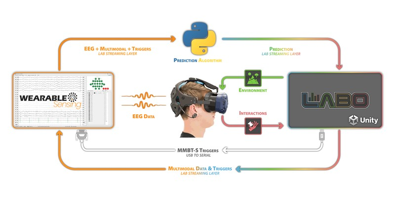

Unity#
Unity is a cross-platform game engine widely used for game development and research. Its C# scripting, large ecosystem, and active community make it a practical choice for BCI applications spanning 2D/3D games, VR/AR, and neurofeedback. This page covers the Unity-specific implementation; for BCI paradigm design and pipeline architecture, see Game Development.
Featured Tools#
{kind=link}

Example architecture for integrating Wearable Sensing EEG with SilicoLabs Labo in Unity.#
Recommended starting point for most projects. An open-source Unity framework for BCI game development. Handles stimulus presentation, LSL marker management, and Python backend communication. Includes pre-built P300, SSVEP, and motor imagery paradigms. Pairs with bci-essentials-python.
An experiment design platform for Unity that lets researchers build interactive 3D environments without extensive coding. Point-and-click stimulus authoring, data capture, and support for eye tracking, body movement, and hand tracking. Works with Wearable Sensing headsets over the standard DSI to LSL pipeline.
Sending LSL Markers from Unity#
The standard integration pattern is for Unity to send stimulus onset markers to a Python backend via LSL during an experiment, and receive classifier predictions in return. This requires the LSL4Unity plugin.
Setup#
Download the latest release from the LSL4Unity GitHub repository.
Import the
.unitypackageinto your project via Assets > Import Package > Custom Package.
Sending Markers#
Call SendMarker at the moment each stimulus appears on screen. The Python backend reads this stream alongside the EEG stream to align time-locked epochs.
using LSL;
using UnityEngine;
public class MarkerSender : MonoBehaviour
{
private StreamOutlet outlet;
void Start()
{
StreamInfo info = new StreamInfo("StimulusMarkers", "Markers", 1, 0, channel_format_t.cf_string);
outlet = new StreamOutlet(info);
}
public void SendMarker(string markerValue)
{
string[] sample = { markerValue };
outlet.push_sample(sample);
}
}
Sending Markers via Serial Port (MMBT-S)#
For hardware-level timing, Unity can write trigger bytes over a serial port to the MMBT-S, which converts them to TTL pulses on the DSI trigger channel. This embeds markers directly in the hardware EEG stream rather than a separate LSL channel — useful when sub-millisecond timing precision is required.
The NeurospecTriggerBox-Unity plugin provides a ready-made Unity component for this. After configuring the serial port, it sends a trigger byte at each stimulus onset, which is recorded on the DSI trigger channel and visible in DSI-Streamer.
See Learning: Triggers & Event Alignment for guidance on measuring and correcting trigger timing offsets.
Receiving Predictions from a Python Backend#
Once a BCI classifier is trained, the Python backend streams predictions to Unity in real time over LSL. The same LSL4Unity plugin handles receiving.
Python Backend#
The backend reads the EEG data stream (from the DSI headset via dsi2lslGUI) and the marker stream from Unity, processes the data, and publishes predictions on a new LSL outlet:
import pylsl
import numpy as np
eeg_streams = pylsl.resolve_stream('type', 'EEG')
marker_streams = pylsl.resolve_stream('type', 'Markers')
eeg_inlet = pylsl.StreamInlet(eeg_streams[0])
marker_inlet = pylsl.StreamInlet(marker_streams[0])
pred_info = pylsl.StreamInfo('BCI_Predictions', 'Markers', 1, 0, pylsl.cf_int32)
pred_outlet = pylsl.StreamOutlet(pred_info)
while True:
samples, timestamps = eeg_inlet.pull_chunk(timeout=0.1)
markers, _ = marker_inlet.pull_chunk(timeout=0.0)
if samples:
data = np.array(samples)
prediction = process_and_classify(data)
pred_outlet.push_sample([prediction])
Unity LSL Receiver#
Unity reads the prediction stream using LSL4Unity’s StreamInlet:
using LSL;
using UnityEngine;
public class BCIReceiver : MonoBehaviour
{
[SerializeField] private MonoBehaviour player; // assign your player controller in the Inspector
private StreamInlet inlet;
private int[] sample = new int[1];
void Start()
{
StreamInfo[] results = LSL.LSL.resolve_stream("name", "BCI_Predictions");
inlet = new StreamInlet(results[0]);
}
void Update()
{
double timestamp = inlet.pull_sample(sample, 0.0f);
if (timestamp > 0)
{
HandlePrediction(sample[0]);
}
}
void HandlePrediction(int prediction)
{
switch (prediction)
{
case 1: player.MoveLeft(); break;
case 2: player.MoveRight(); break;
case 3: player.Select(); break;
}
}
}